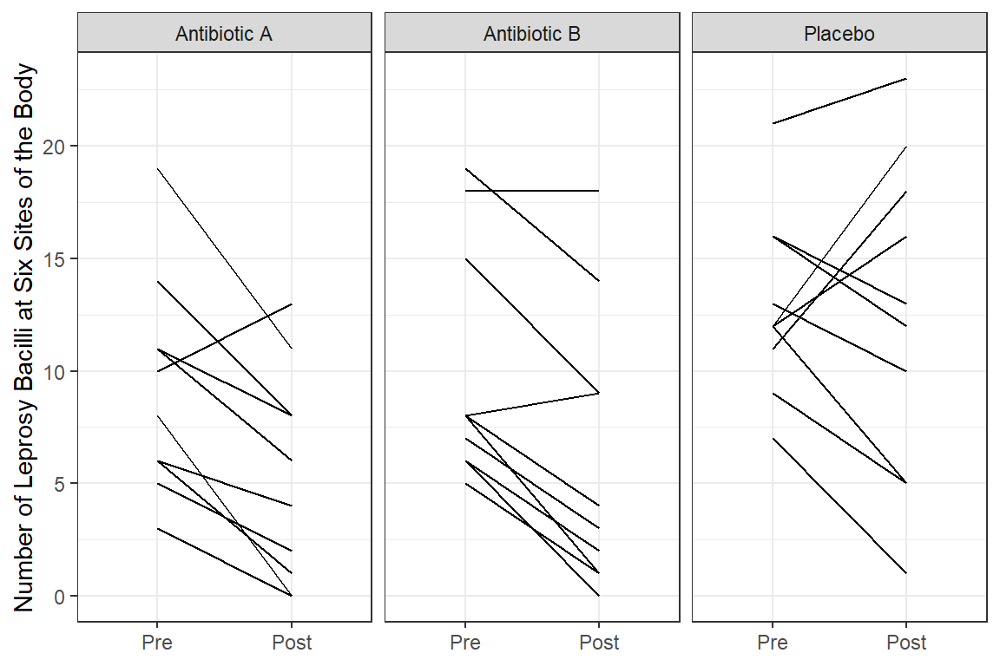
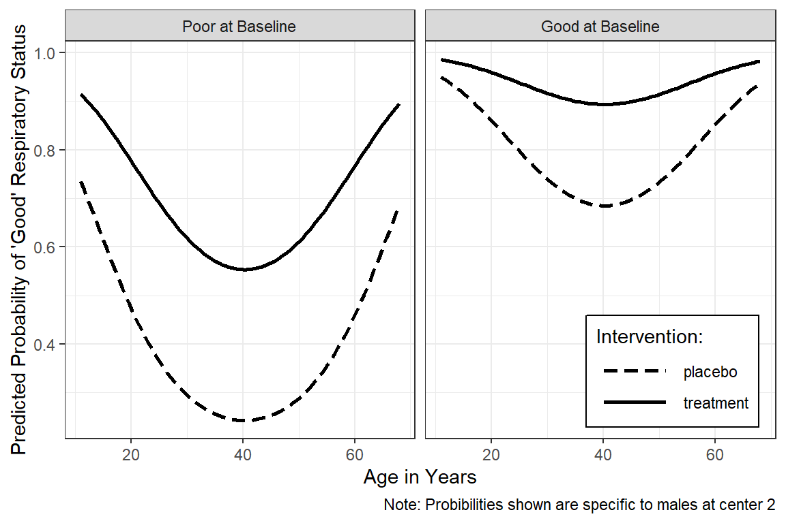
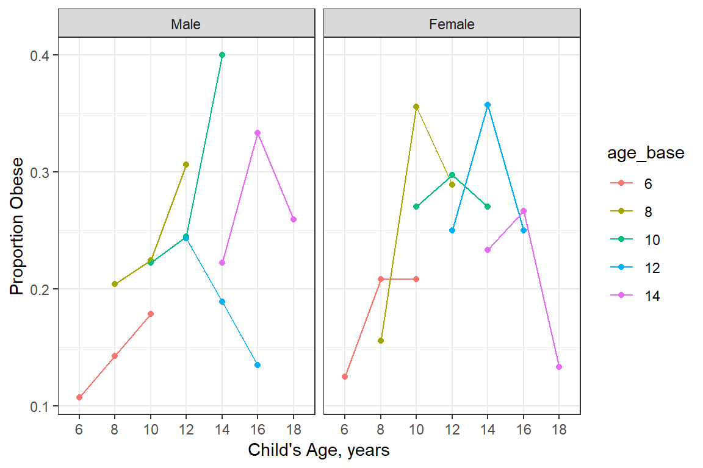
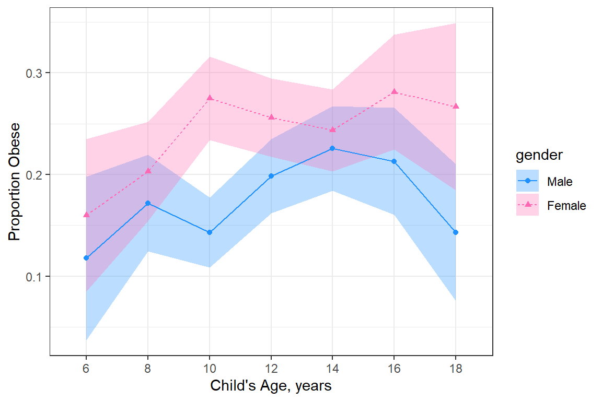
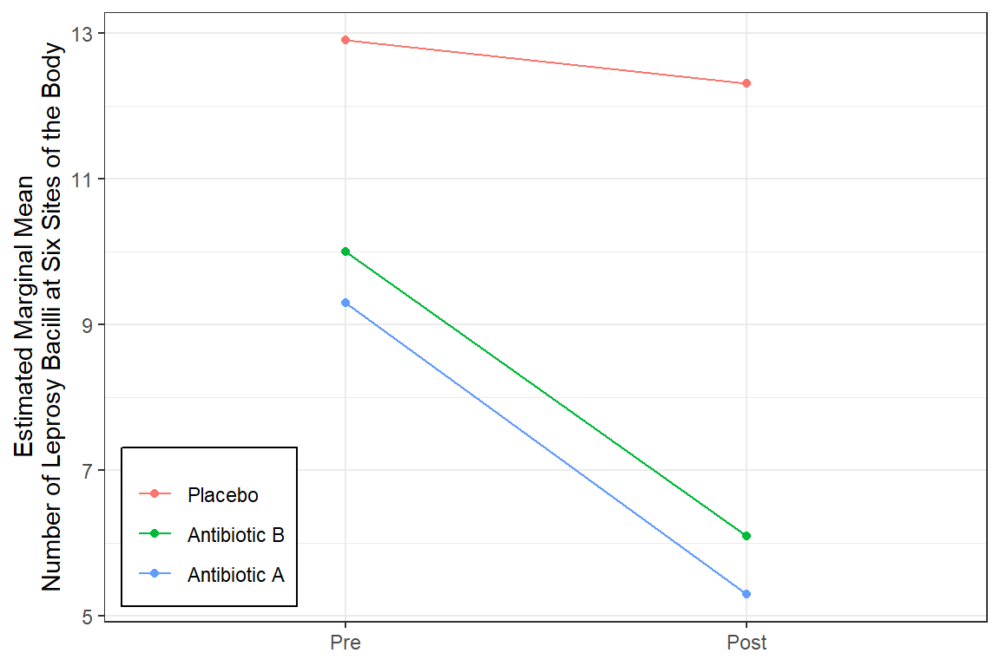

17 GEE, Count Outcome: Antibiotics for Leprosy
17.1 Packages
17.1.1 CRAN
library(tidyverse) # all things tidy
library(pander) # nice looking genderal tabulations
library(furniture) # nice table1() descriptives
library(texreg) # Convert Regression Output to LaTeX or HTML Tables
library(psych) # contains some useful functions, like headTail
library(lme4) # Linear, generalized linear, & nonlinear mixed models
library(corrplot) # Vizualize correlation matrix
library(gee) # Genderalized Estimation Equation Solver
library(geepack) # Genderalized Estimation Equation Package
library(MuMIn) # Multi-Model Inference (caluclate QIC)17.2 Data
17.2.1 Import
The following example is presented in the textbook: “Applied Longitudinal Analysis” by Garrett Fitzmaurice, Nan Laird & James Ware
The dataset maybe downloaded from: https://content.sph.harvard.edu/fitzmaur/ala/
Data on count of leprosy bacilli pre- and post-treatment from a clinical trial of antibiotics for leprosy.
Source: Table 14.2.1 (page 422) in Snedecor, G.W. and Cochran, W.G. (1967). Statistical Methods, (6th edn). Ames, Iowa: Iowa State University Press
With permission of Iowa State University Press.
Reference: Snedecor, G.W. and Cochran, W.G. (1967). Statistical Methods, (6th edn). Ames, Iowa: Iowa State University Press
Description:
The dataset consists of count data from a placebo-controlled clinical trial of 30 patients with leprosy at the Eversley Childs Sanitorium in the Philippines. Participants in the study were randomized to either of two antibiotics (denoted treatment drug A and B) or to a placebo (denoted treatment drug C). Prior to receiving treatment, baseline data on the number of leprosy bacilli at six sites of the body where the bacilli tend to congregate were recorded for each patient. After several months of treatment, the number of leprosy bacilli at six sites of the body were recorded a second time. The outcome variable is the total count of the number of leprosy bacilli at the six sites.
In this study, the question of main scientific interest is whether treatment with antibiotics (drugs A and B) reduces the abundance of leprosy bacilli at the six sites of the body when compared to placebo (drug C).
Variables:
Outcome or dependent variable(s)
count.prePre-Treatment Bacilli Countcount.postPost-Treatment Bacilli Count
Main predictor or independent variable of interest
drugthe treatment group: antibiotics (drugs A and B) or placebo (drug C)
data_raw <- tibble::tribble(
~drug, ~count_pre, ~count_post,
"A", 11, 6, "B", 6, 0, "C", 16, 13,
"A", 8, 0, "B", 6, 2, "C", 13, 10,
"A", 5, 2, "B", 7, 3, "C", 11, 18,
"A", 14, 8, "B", 8, 1, "C", 9, 5,
"A", 19, 11, "B", 18, 18, "C", 21, 23,
"A", 6, 4, "B", 8, 4, "C", 16, 12,
"A", 10, 13, "B", 19, 14, "C", 12, 5,
"A", 6, 1, "B", 8, 9, "C", 12, 16,
"A", 11, 8, "B", 5, 1, "C", 7, 1,
"A", 3, 0, "B", 15, 9, "C", 12, 20)17.2.2 Wide Format
data_wide <- data_raw %>%
dplyr::mutate(drug = factor(drug)) %>%
dplyr::mutate(id = row_number()) %>%
dplyr::select(id, drug, count_pre, count_post)
str(data_wide)tibble [30 x 4] (S3: tbl_df/tbl/data.frame)
$ id : int [1:30] 1 2 3 4 5 6 7 8 9 10 ...
$ drug : Factor w/ 3 levels "A","B","C": 1 2 3 1 2 3 1 2 3 1 ...
$ count_pre : num [1:30] 11 6 16 8 6 13 5 7 11 14 ...
$ count_post: num [1:30] 6 0 13 0 2 10 2 3 18 8 ... id drug count_pre count_post
1 1 A 11 6
2 2 B 6 0
3 3 C 16 13
4 4 A 8 0
5 ... <NA> ... ...
6 27 C 7 1
7 28 A 3 0
8 29 B 15 9
9 30 C 12 2017.2.3 Long Format
data_long <- data_wide %>%
tidyr::gather(key = obs,
value = count,
starts_with("count")) %>%
dplyr::mutate(time = case_when(obs == "count_pre" ~ 0,
obs == "count_post" ~ 1)) %>%
dplyr::select(id, drug, time, count) %>%
dplyr::arrange(id, time)
str(data_long)tibble [60 x 4] (S3: tbl_df/tbl/data.frame)
$ id : int [1:60] 1 1 2 2 3 3 4 4 5 5 ...
$ drug : Factor w/ 3 levels "A","B","C": 1 1 2 2 3 3 1 1 2 2 ...
$ time : num [1:60] 0 1 0 1 0 1 0 1 0 1 ...
$ count: num [1:60] 11 6 6 0 16 13 8 0 6 2 ... id drug time count
1 1 A 0 11
2 1 A 1 6
3 2 B 0 6
4 2 B 1 0
5 ... <NA> ... ...
6 29 B 0 15
7 29 B 1 9
8 30 C 0 12
9 30 C 1 2017.3 Exploratory Data Analysis
17.3.1 Summary Statistics
data_long %>%
dplyr::group_by(drug, time) %>%
dplyr::summarise(N = n(),
M = mean(count),
VAR = var(count),
SD = sd(count)) %>%
pander::pander()| drug | time | N | M | VAR | SD |
|---|---|---|---|---|---|
| A | 0 | 10 | 9.3 | 23 | 4.8 |
| A | 1 | 10 | 5.3 | 22 | 4.6 |
| B | 0 | 10 | 10.0 | 28 | 5.2 |
| B | 1 | 10 | 6.1 | 38 | 6.2 |
| C | 0 | 10 | 12.9 | 16 | 4.0 |
| C | 1 | 10 | 12.3 | 51 | 7.2 |
17.3.2 Visualize
data_long %>%
dplyr::mutate(time_name = case_when(time == 0 ~ "Pre",
time == 1 ~ "Post") %>%
factor(levels = c("Pre", "Post"))) %>%
dplyr::mutate(drug_name = fct_recode(drug,
"Antibiotic A" = "A",
"Antibiotic B" = "B",
"Placebo" = "C")) %>%
ggplot(aes(x = time_name,
y = count)) +
geom_line(aes(group = id)) +
facet_grid(.~ drug_name) +
theme_bw() +
labs(x = NULL,
y = "Number of Leprosy Bacilli at Six Sites of the Body")
data_long %>%
dplyr::mutate(time_name = case_when(time == 0 ~ "Pre",
time == 1 ~ "Post") %>%
factor(levels = c("Pre", "Post"))) %>%
dplyr::mutate(drug_name = fct_recode(drug,
"Antibiotic A" = "A",
"Antibiotic B" = "B",
"Placebo" = "C")) %>%
ggplot(aes(x = time,
y = count)) +
geom_line(aes(group = id),
color = "gray") +
geom_smooth(aes(group = drug),
method = "lm") +
facet_grid(.~ drug_name) +
theme_bw() +
labs(x = NULL,
y = "Number of Leprosy Bacilli at Six Sites of the Body")
data_long %>%
dplyr::mutate(time_name = case_when(time == 0 ~ "Pre",
time == 1 ~ "Post") %>%
factor(levels = c("Pre", "Post"))) %>%
dplyr::mutate(drug_name = fct_recode(drug,
"Antibiotic A" = "A",
"Antibiotic B" = "B",
"Placebo" = "C")) %>%
ggplot(aes(x = time,
y = count)) +
geom_smooth(aes(group = drug,
color = drug_name,
fill = drug_name),
method = "lm",
alpha = .2) +
theme_bw() +
labs(x = NULL,
y = "Number of Leprosy Bacilli at Six Sites of the Body",
color = NULL,
fill = NULL) +
scale_x_continuous(breaks = 0:1,
labels = c("Pre-Treatment", "Post-Treatment"))
17.4 Generalized Estimating Equations (GEE)
17.4.0.1 The gee() function in the gee package
mod_gee_ind <- gee::gee(count ~ drug*time,
data = data_long,
family = poisson(link = "log"),
id = id,
corstr = "independence")(Intercept) drugB drugC time drugB:time drugC:time
2.23001 0.07257 0.32721 -0.56231 0.06801 0.51468 mod_gee_exc <- gee::gee(count ~ drug*time,
data = data_long,
family = poisson(link = "log"),
id = id,
corstr = "exchangeable")(Intercept) drugB drugC time drugB:time drugC:time
2.23001 0.07257 0.32721 -0.56231 0.06801 0.51468 mod_gee_uns <- gee::gee(count ~ drug*time,
data = data_long,
family = poisson(link = "log"),
id = id,
corstr = "unstructured")(Intercept) drugB drugC time drugB:time drugC:time
2.23001 0.07257 0.32721 -0.56231 0.06801 0.51468 17.4.1 Compare Models
17.4.1.1 Raw Estimates (log-rate scale)
# Knit to Website: texreg::htmlreg()
# Knit to PDF: texreg::texreg()
# View on Screen: texreg::screenreg()
texreg::htmlreg(list(mod_gee_ind,
mod_gee_exc,
mod_gee_uns),
custom.model.names = c("Independence",
"Exchangeable",
"Unstructured"),
single.row = TRUE,
digits = 3,
caption = "Estimates on Log Scale")| Independence | Exchangeable | Unstructured | |
|---|---|---|---|
| (Intercept) | 2.230 (0.154)*** | 2.230 (0.154)*** | 2.230 (0.154)*** |
| drugB | 0.073 (0.220) | 0.073 (0.220) | 0.073 (0.220) |
| drugC | 0.327 (0.179) | 0.327 (0.179) | 0.327 (0.179) |
| time | -0.562 (0.176)** | -0.562 (0.176)** | -0.562 (0.176)** |
| drugB:time | 0.068 (0.246) | 0.068 (0.246) | 0.068 (0.246) |
| drugC:time | 0.515 (0.221)* | 0.515 (0.221)* | 0.515 (0.221)* |
| Scale | 3.474 | 3.474 | 3.474 |
| Num. obs. | 60 | 60 | 60 |
| p < 0.001; p < 0.01; p < 0.05 | |||
17.4.1.2 Exponentiate the Estimates (risk scale)
# Knit to Website: texreg::htmlreg()
# Knit to PDF: texreg::texreg()
# View on Screen: texreg::screenreg()
texreg::htmlreg(list(extract_gee_exp(mod_gee_ind),
extract_gee_exp(mod_gee_exc),
extract_gee_exp(mod_gee_uns)),
custom.model.names = c("Independence",
"Exchangeable",
"Unstructured"),
single.row = TRUE,
digits = 3,
ci.test = 1,
caption = "Estimates on Count Scale")| Independence | Exchangeable | Unstructured | |
|---|---|---|---|
| (Intercept) | 9.300 [6.882; 12.567]* | 9.300 [6.882; 12.567]* | 9.300 [6.882; 12.567]* |
| drugB | 1.075 [0.699; 1.655] | 1.075 [0.699; 1.655] | 1.075 [0.699; 1.655] |
| drugC | 1.387 [0.977; 1.970] | 1.387 [0.977; 1.970] | 1.387 [0.977; 1.970] |
| time | 0.570 [0.404; 0.805]* | 0.570 [0.404; 0.805]* | 0.570 [0.404; 0.805]* |
| drugB:time | 1.070 [0.661; 1.734] | 1.070 [0.661; 1.734] | 1.070 [0.661; 1.734] |
| drugC:time | 1.673 [1.086; 2.578]* | 1.673 [1.086; 2.578]* | 1.673 [1.086; 2.578]* |
| Dispersion | 3.474 | 3.474 | 3.474 |
| Num. obs. | 60 | 60 | 60 |
| * Null hypothesis value outside the confidence interval. | |||
17.4.1.3 Manual Extraction
(Intercept) drugB drugC time drugB:time drugC:time
9.3000 1.0753 1.3871 0.5699 1.0704 1.6731 [1] 0.9535Interpretation
Antibiotic A Group: Starts with mean of 9.3 and drops by 45% (nearly cut in half) over the course of treatment.
Antibiotic B Group: Starts at about the same mean at Antibiotic A group and experiences the same decrease.
Control Group (C): Starts at about the same mean at Antibiotic A group BUT experiences a less than a 5% decrease over the student period while on the placebo pills.
17.4.2 Visualize the Final Model
17.4.2.1 Refit with the geeglm() function in the geepack package
mod_geeglm_exc <- geepack::geeglm(count ~ drug*time,
data = data_long,
family = poisson(link = "log"),
id = id,
corstr = "exchangeable")
summary(mod_geeglm_exc)
Call:
geepack::geeglm(formula = count ~ drug * time, family = poisson(link = "log"),
data = data_long, id = id, corstr = "exchangeable")
Coefficients:
Estimate Std.err Wald Pr(>|W|)
(Intercept) 2.2300 0.1536 210.74 <2e-16 ***
drugB 0.0726 0.2200 0.11 0.7415
drugC 0.3272 0.1791 3.34 0.0677 .
time -0.5623 0.1760 10.21 0.0014 **
drugB:time 0.0680 0.2460 0.08 0.7822
drugC:time 0.5147 0.2206 5.45 0.0196 *
---
Signif. codes: 0 '***' 0.001 '**' 0.01 '*' 0.05 '.' 0.1 ' ' 1
Correlation structure = exchangeable
Estimated Scale Parameters:
Estimate Std.err
(Intercept) 3.13 0.513
Link = identity
Estimated Correlation Parameters:
Estimate Std.err
alpha 0.735 0.081
Number of clusters: 30 Maximum cluster size: 2 17.4.2.2 Predict over a manual grid of predictors
expand.grid(drug = levels(data_long$drug),
time = 0:1) %>%
dplyr::mutate(fit = predict(mod_geeglm_exc,
newdata = .,
type = "response")) drug time fit
1 A 0 9.3
2 B 0 10.0
3 C 0 12.9
4 A 1 5.3
5 B 1 6.1
6 C 1 12.3expand.grid(drug = levels(data_long$drug),
time = 0:1) %>%
dplyr::mutate(fit = predict(mod_geeglm_exc,
newdata = .,
type = "response")) %>%
dplyr::mutate(time_name = case_when(time == 0 ~ "Pre",
time == 1 ~ "Post") %>%
factor(levels = c("Pre", "Post"))) %>%
dplyr::mutate(drug_name = fct_recode(drug,
"Antibiotic A" = "A",
"Antibiotic B" = "B",
"Placebo" = "C")) %>%
ggplot(aes(x = time_name,
y = fit,
group = drug_name %>% fct_rev,
color = drug_name %>% fct_rev)) +
geom_point() +
geom_line() +
theme_bw() +
labs(x = NULL,
y = "Estimated Marginal Mean\nNumber of Leprosy Bacilli at Six Sites of the Body",
color = NULL) +
theme(legend.position = c(0, 0),
legend.justification = c(-0.1, -0.1),
legend.background = element_rect(color = "black"))
17.5 Follow-up Analysis
17.5.1 Collapse the Predictor
17.5.2 Reduce the Model - gee::gee()
mod_gee_exc2 <- gee::gee(count ~ antibiotic:time ,
data = data_remodel,
family = poisson(link = "log"),
id = id,
corstr = "exchangeable") (Intercept) antibioticyes:time antibioticno:time
2.373 -0.633 0.136
GEE: GENERALIZED LINEAR MODELS FOR DEPENDENT DATA
gee S-function, version 4.13 modified 98/01/27 (1998)
Model:
Link: Logarithm
Variance to Mean Relation: Poisson
Correlation Structure: Exchangeable
Call:
gee::gee(formula = count ~ antibiotic:time, id = id, data = data_remodel,
family = poisson(link = "log"), corstr = "exchangeable")
Summary of Residuals:
Min 1Q Median 3Q Max
-9.618 -4.733 -0.484 3.517 12.382
Coefficients:
Estimate Naive S.E. Naive z Robust S.E. Robust z
(Intercept) 2.3734 0.103 23.0780 0.0801 29.6159
antibioticyes:time -0.5249 0.102 -5.1243 0.1112 -4.7183
antibioticno:time -0.0108 0.114 -0.0942 0.1572 -0.0684
Estimated Scale Parameter: 3.41
Number of Iterations: 5
Working Correlation
[,1] [,2]
[1,] 1.00 0.78
[2,] 0.78 1.0017.5.3 Compare Parameters
# Knit to Website: texreg::htmlreg()
# Knit to PDF: texreg::texreg()
# View on Screen: texreg::screenreg()
texreg::htmlreg(list(extract_gee_exp(mod_gee_exc),
extract_gee_exp(mod_gee_exc2)),
custom.model.names = c("Original",
"Refit"),
single.row = TRUE,
digits = 3,
ci.test = 1,
caption = "Estimates on Count Scale (Exchangeable)")| Original | Refit | |
|---|---|---|
| (Intercept) | 9.300 [6.882; 12.567]* | 10.733 [9.173; 12.559]* |
| drugB | 1.075 [0.699; 1.655] | |
| drugC | 1.387 [0.977; 1.970] | |
| time | 0.570 [0.404; 0.805]* | |
| drugB:time | 1.070 [0.661; 1.734] | |
| drugC:time | 1.673 [1.086; 2.578]* | |
| antibioticyes:time | 0.592 [0.476; 0.736]* | |
| antibioticno:time | 0.989 [0.727; 1.346] | |
| Dispersion | 3.474 | 3.406 |
| Num. obs. | 60 | 60 |
| * Null hypothesis value outside the confidence interval. | ||
Interpretation
Grand mean is 10.73 at pre-treatment.
The mean count dropped by about 40% among thoes on antibiotics, but there was no decrease for thoes on placebo pills.
17.5.4 Visualize
17.5.4.1 Refit with geepack::geeglm()
17.5.4.2 Predict over a manual grid
expand.grid(antibiotic = levels(data_remodel$antibiotic),
time = 0:1) %>%
dplyr::mutate(fit = predict(mod_geeglm_exc2,
newdata = .,
type = "response")) %>%
dplyr::mutate(time_name = case_when(time == 0 ~ "Pre",
time == 1 ~ "Post") %>%
factor(levels = c("Pre", "Post"))) %>%
ggplot(aes(x = time_name,
y = fit,
group = antibiotic %>% fct_rev,
color = antibiotic %>% fct_rev)) +
geom_point() +
geom_line() +
theme_bw() +
labs(x = NULL,
y = "Estimated Marginal Mean\nNumber of Leprosy Bacilli at Six Sites of the Body",
color = "Antibiotic") +
theme(legend.position = c(0, 0),
legend.justification = c(-0.1, -0.1),
legend.background = element_rect(color = "black"))